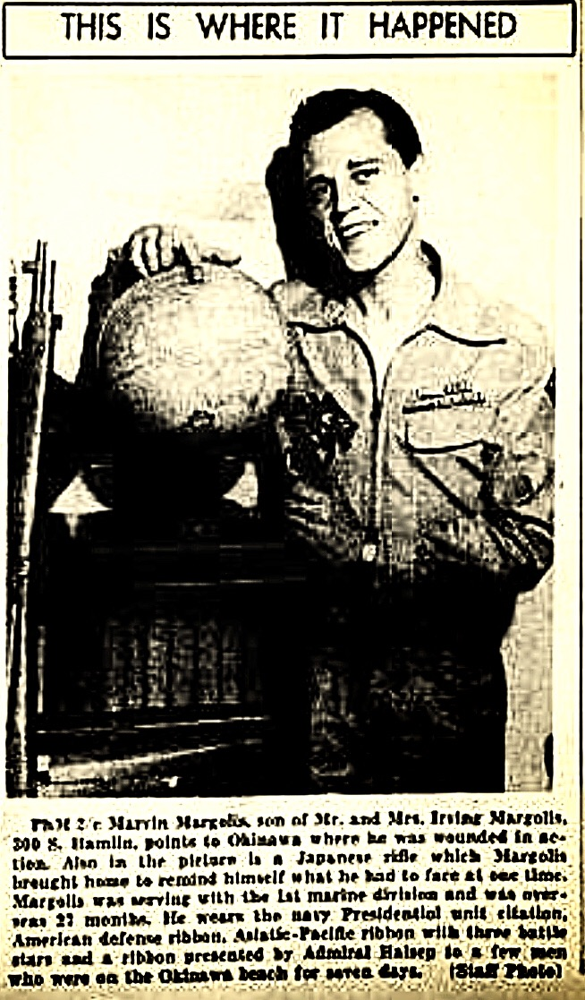
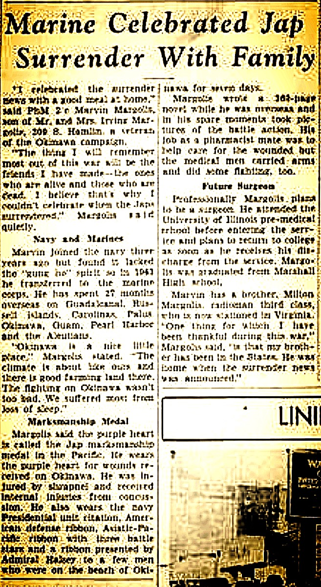

Screenshots and images drawn from email correspondence and research files shared by the unnamed Zodiac researcher referenced in the accompanying show notes, documenting genealogical findings on the Merrill/Margolis family and related correspondence with Alex Baber. Click any image to open it at full resolution in a new tab. This researcher’s broader collection of source materials (newspaper clippings, documents, yearbooks, public records, etc.) is also published at his Flickr album.

